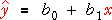
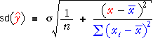
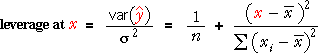
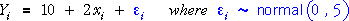
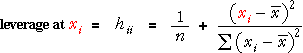

Normal regression model
In this chapter, we return to the normal linear model, in which the i'th response value in the data set has distribution,

This model is often expressed in the equivalent form,

The least squares estimates of β0 and β1 are again denoted by b0 and b1.
Variability of the least squares line
The variability of the least squares line can be described in terms of the variability of the predictions that are made from it at different x .

These predictions have standard deviation,

From this equation, it is clear that the standard deviation is lowest when
predicting at a value x that is close
to the mean of the x-values in the data,  .
.
Variability of predictions
The diagram below simulates data from a normal linear model.
Click Accumulate then take about 30 samples. Observe that
the least squares line is most variable at values of x
to the left and right of the diagram (away from  ).
).
The standard deviation of the predictions is shown as the graph at the bottom of the diagram. Use the pop-up menu to change the scale in this graph to show the variances of the predictions (the square of their standard deviation). This is a quadratic function of x .
Choosing the x-values
In an experiment, the researcher often has control over the x-values that are used for runs of the experiment. Looking again at the standard deviation of predictions,
it can be seen from the blue sum of squares that the predictions are less
variable (more accurate) when the spread of x-values in the data is large.
The most 'important' observations in the data set are therefore those that
increase this sum of squares — observations that are far from  .
.
Choosing the x-value for one extra run of an experiment
Another way to look at the importance of observations at different x-values
is to consider the effect of taking an extra observation
at x . The best value for x
is one that increases the spread of x-values — a value far from the mean
of the earlier observations,  .
.
Another equivalent way to describe this choice can be more easily extended in later chapters. A new observation at x will have most direct effect on improving predictions at x itself. The improvement will be greatest if the prediction at x was poor (large variance) before the new observation.
The best place to make an extra observation is at an x-value where the fitted values have greatest variance.
The potential benefit of making a new observation at x can therefore be described by its leverage.

Effect of an extra observation at x
The diagram below describes the normal linear model

where observations are made at x = 15, 18, 25 and 26.
The band contains 95% of the least squares lines that would be obtained from a simulation such as the simulation earlier in this page. (More precisely, the band contains 95% of the predictions that would be obtained at each x.)
Click Extra point at to see how the distribution of the predictions changes when a fifth data point is added. The response distribution at this x is represented by a red arrow ±2σ on each side of the response mean — i.e. on each side of the regression line at x .
Use the slider to see how the distribution of the predictions is affected
by the x-value at which the new observation is made. The prediction band
is narrowed by the new observation and this narrowing is most pronounced
when x is furthest from  = 21.
= 21.
Leverage of existing data points
Leverage can be used to describe the potential effect of a new observation at any x-value, but it is most often used to describe the importance of the existing data points.

Note that leverage does not depend on the response, only on the explanatory variable.